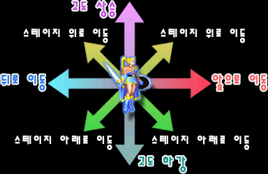

| 메인 매뉴 | | | 무기류 | | | 장비류 | | | 도구류 | | | 보석류&기타 | | | 상점 정보 |
| 전설의 검 풀기 | | | LB오일 정보 | | | 상자 정보 | | | 아이템 콜렉션 |
| 몸체 방어구 | | | 신발/장갑류 | | | 방패류 | | | 로드/반지류 | | | 장신구류 | | | 특수 아이템 |
매직 유저의 머리 방어구 입니다. 헬 하운드, 레드 드래곤 등의 물기 공격 공격에 대해서는 효과가 없습니다. 효과 : HP 피해 감소 (단위:픽셀)
입수 방법 - 매직 유저의 이름을 '타입 C'가 되도록 작성. - 스테이지 5-A(절망의 숲)의 우측 상단 숨겨진 방의 하단 상자를 매직 유저가 개봉. - 스테이지 10-1(게이트)의 우측 숨겨진 방의 하단 상자를 매직 유저가 개봉. |
시프의 머리 방어구 입니다. 그러나 시프가 착용시 감소 효과가 전혀 없습니다(아시아버전만 그런건지는 모르겠지만). 헬 하운드, 레드 드래곤 등의 물기 공격 공격에 대해서는 효과가 없습니다. 효과 : HP 피해 감소 (단위:픽셀)
입수 방법 - 시프의 이름을 '타입 C'가 되도록 작성. - 스테이지 5-A(절망의 숲)의 우측 상단 숨겨진 방의 하단 상자를 시프가 개봉. - 스테이지 10-1(게이트)의 우측 숨겨진 방의 하단 상자를 시프가 개봉. |
엘프의 머리 방어구 입니다. 헬 하운드, 레드 드래곤 등의 물기 공격 공격에 대해서는 효과가 없습니다. 효과 : HP 피해 감소 (단위:픽셀)
입수 방법 - 엘프의 이름을 '타입 C'가 되도록 작성. - 스테이지 5-A(절망의 숲)의 우측 상단 숨겨진 방의 하단 상자를 엘프가 개봉. - 시프로 셰도우 엘프에게 픽포켓 시도시 확률에 따라 드랍. |
클레릭의 머리 방어구 입니다. 헬 하운드, 레드 드래곤 등의 물기 공격 공격에 대해서는 효과가 없습니다. 효과 : HP 피해 감소 (단위:픽셀)
입수 방법 - 클레릭의 이름을 '타입 C'가 되도록 작성. - 스테이지 5-A(절망의 숲)의 우측 상단 숨겨진 방의 하단 상자를 클레릭이 개봉. - hidden(레드 드래곤)의 가장 우측 하단 상자를 클레릭이 개봉. - 스테이지 10-1(게이트)의 우측 숨겨진 방의 하단 상자를 클레릭이 개봉. |
엘프용으로 추정되는 상급 머리 방어구 입니다. 헬 하운드, 레드 드래곤 등의 물기 공격 공격에 대해서는 효과가 없습니다. 효과 : HP 피해 감소 (단위:픽셀)
입수 방법 - 스테이지 10-1(게이트)의 우측 숨겨진 방의 하단 상자를 엘프가 개봉. - 시프로 오거(동생)에게 픽포켓 시도시 확률에 따라 드랍. ※ 감소치는 모든 공격의 데미지를 조사 한 것이 아니라서 신뢰도가 조금 떨어질 수 있습니다. (아니, 조사한 사람도 조금 혼란스러움...) |
※ 몸체 방어구의 경우 처음부터 보유하고 있으며 도중에 바꾸거나 할 수 없습니다.
가장 높은 방어력을 보여줍니다. |
가장 방어력이 낮습니다. |
두번째로 방어력이 낮습니다. |
파이터에 이어서 두번째로 방어력이 높습니다. 초반에는 드워프와 비슷하나 후반으로 갈수록 조금씩 더 높아집니다. |
초반에는 클레릭과 비슷하나 후반으로 갈 수록 조금씩 방어력이 상대적으로 떨어집니다. |
매직 유저, 시프보다는 조금 더 높지만 드워프, 클레릭보다 떨어집니다. 한눈에 보는 방어력 순위 : 파이터 > 클레릭 ≒ 드워프 > 엘프 > 시프 > 매직 유저 |
효과 : 걷기 속도 증가 신발류 중에선 가장 흔하게 볼 수 있는 아이템입니다. 2~5회 정도 데미지를 입을 경우 부셔집니다. (리치의 어스퀘이크, cs2의 마비도 해당되며 물기 공격의 경우 한번에 부서질 수도 있음.) 입수 방법 - 이름을 '타입 B'가 되도록 작성(전 클래스 공통). - 스테이지 2(트린턴 마을)의 숨겨진 방의 가장 오른쪽 상자를 개봉(전 클래스 공통). - 스테이지 5-A(절망의 숲)의 하단 숨겨진 방의 좌측 상자를 시프가 개봉. - 스테이지 5-A(절망의 숲)의 중단 숨겨진 방의 두번째 상단 상자를 개봉(전 클래스 공통). - 스테이지 5-B(아인슨 마을)의 첫번째 숨겨진 방 안쪽 방의 가장 상단 상자를 시프가 개봉. - 디스플레이서 비스트 격파 시 확률에 따라 드랍. - 라파엘 동굴의 숨겨진 보물실(레드 드래곤)의 중간 지역(레드 드래곤과 대화하는 지역 부근)에 놓여 있음. - 라파엘 동굴의 숨겨진 보물실(레드 드래곤)의 가장 우측 하단 상자를 개봉시 확률에 따라 등장(전 클래스 공통). - 스테이지 9-A(화염의 대지)의 첫번째 상자를 개봉시 확률에 따라 등장(전 클래스 공통). - 스테이지 9-B(잃어버린 세계)의 가장 우측 상자를 개봉시 확률에 따라 등장(전 클래스 공통). - 3인 이상 플레이시 스테이지 9-C(드워프 지하동굴)의 중간 상자를 개봉(전 클래스 공통). - 스테이지 10-1(게이트)의 두번째 숨겨진 방의 가장 하단 상자를 개봉시 확률에 따라 등장(전 클래스 공통). - 스테이지 10-3(배틀로얄)의 세번째 숨겨진 방의 하단 4개 상자중 상단 우측 상자를 개봉(전 클래스 공통). |
효과 : 2단 점프 및 삼각 점프를 가능케 해 줌 시프의 기본 장비중 하나 입니다. 게임상에서 따로 나오지 않기 때문에 타 클래스는 장비 할 수 없습니다. 다른 신발류와는 달리 부서지지 않습니다. |
효과 : 백스텝 시도시 백스텝 대신에 공중 부양이 됨 흔히 보기 힘든 신발로 특정 스테이지를 넘길 경우 자동으로 사라집니다. 드워프, 엘프가 입수시 아주 유용하게 사용 할 수 있습니다. 또한 기본무기 만으로 플레임/프로스트 샐러맨더를 잡을 때도 유용하게 사용 됩니다. 2~5회 정도 데미지를 입을 경우 부셔집니다. (리치의 어스퀘이크, cs2의 마비도 해당되며 물기 공격의 경우 한번에 부서질 수도 있음.) 입수 방법 - 비홀더가 떨구는 비홀더의 눈(Eye of Beholder)을 입수 후 그 후의 상점주인에게 가져가서 교환(전 클래스 공통). → 리치를 제압 후 사라집니다. - 플레임/프로스트 샐러맨더가 있는 지역의 상자를 개봉(전 클래스 공통). (2인 이상 플레이시 나오는 왼쪽의 상자에서도 입수 가능) → 플레임/프로스트 샐러맨더를 제압 후 사라집니다. 공중 부양시의 특징 - 공중 부양시의 공격은 점프 공격이 나갑니다. - 적 몬스터들이 공중 부양한 플레이어 캐릭터를 인식하지 못합니다. 단, 리치의 몸체나 돌진중인 헬하운드 같은 그 자체에 데미지 판정이 있는 몸체에 닿을 경우 데미지를 입습니다. - 엘프의 경우 공중 부양한 상태에서 화살류의 발사가 가능합니다. 은화살의 경우 헤이스트의 영향을 받습니다. - 공중 부양한 상태에서 저주의 검 1, 2를 휘둘러도 피해를 입지 않습니다(그러나 이걸 이용해 저주를 풀 수 없습니다). 공중 부양시의 조작법 - 앞뒤로의 방향전환은 불가능 합니다.  |
효과 : 착용 무기의 데미지 2~4 증가 장갑류라고는 하지만...장갑류는 이것 하나 밖에 없습니다. 전 클래스에게 아주 유용한 아이템입니다. (전작 TOD에선 'Gauntlet of Ogre Power'라고 이름이 붙혀졌었슴) 2~5회 정도 데미지를 입을 경우 부셔집니다. (리치의 어스퀘이크, cs2의 마비도 해당되며 물기 공격의 경우 한번에 부서질 수도 있음.) 입수 방법 - 이름을 '타입 G'가 되도록 작성(전 클래스 공통). - 스테이지 2(트린턴 마을)의 숨겨진 방의 가장 오른쪽 상자를 파이터, 클레릭, 드워프가 개봉. - 스테이지 5-A(절망의 숲)의 하단 숨겨진 방의 좌측 상자를 파이터, 드워프가 개봉. - 스테이지 5-B(아인슨 마을)의 첫번째 숨겨진 방 안쪽 방의 가장 상단 상자를 파이터, 드워프가 개봉. - 라파엘 동굴의 숨겨진 보물실(레드 드래곤)의 가장 우측 하단 상자를 시프, 드워프가 개봉. - 스테이지 9-A(화염의 대지)의 첫번째 상자를 개봉시 확률에 따라 등장(전 클래스 공통). - 스테이지 9-B(잃어버린 세계)의 첫번째 상자를 개봉시 확률에 따라 등장(전 클래스 공통). - 스테이지 9-C(드워프 지하 동굴)의 첫번째 상자를 개봉(전 클래스 공통). - 스테이지 10-1(게이트)의 첫번째 상자를 개봉시 확률에 따라 등장(전 클래스 공통). - 스테이지 10-3(배틀로얄)의 세번째 숨겨진 방의 하단 4개 상자중 상단 우측 상자를 개봉(전 클래스 공통). - 시프로 다크 워리어1, 녹색 오거에게 픽 포켓 시도시 확률에 따라 드랍. |
파이터, 클레릭, 드워프, 엘프의 기본 장비중 하나 입니다. 아이템 콜렉션에서는 그냥 노멀 실드로 나오지만 게임상에서는 파이터, 클레릭/드워프, 엘프의 방패가 다른걸로 인식 됩니다. 클레릭과 드워프의 방패만 같은 걸로 인식이 됩니다. 따라서 예를 들면 클레릭의 노멀 실드를 파이터가 집었을 경우 2000xp로 환산이 안됩니다. 형태로 봐서 버클러(buckler)에 가깝습니다. |
효과 : 노멀 실드의 기능 + 고블린, 코볼드의 오일 투척을 제외한 모든 불의 속성의 공격을 가드 가능. 파이터, 클레릭, 드워프, 엘프가 입수 가능한 방패 입니다. 모든 방패류 중에서 가장 유용합니다. 입수 방법 - 라파엘 동굴의 숨겨진 보물실(레드 드래곤)의 가장 우측 상단 상자를 개봉(전 클래스 공통). - 스테이지 9-A(화염의 대지)의 가장 우측 상자를 파이터, 클레릭, 드워프, 엘프가 개봉. - 스테이지 10-4(배틀 로얄)의 가장 우측 하단 상자를 개봉시 확률에 따라 드랍(전 클래스 공통). - 시프로 헬하운드에게 픽 포켓 시도시 확률에 따라 드랍. - 리치를 격파시 확률에 따라 드랍. |
효과 : 노멀 실드의 기능 + 프로스트 샐러맨더의 얼음조각상 공격 가드 가능. 파이터, 클레릭, 드워프, 엘프가 입수 가능한 방패 입니다. 효과가 있는 곳이 딱 한군데라서 화염의 방패에 비해 활용성이 상당히 떨어집니다. 입수 방법 - 스테이지 9-B(잃어버린 세계)의 가장 우측 상자를 파이터, 클레릭, 드워프, 엘프가 개봉. - 리치를 격파시 확률에 따라 등장. |
효과 : 노멀 실드의 기능 + 다크 워리어2의 불꽃 방어막 가드 가능. 파이터, 클레릭, 드워프, 엘프가 입수 가능한 방패 입니다. 역시 효과가 있는 곳이 딱 한군데라서 화염의 방패에 비해 활용성이 상당히 떨어집니다. 입수 방법 - 스테이지 5-A(절망의 숲)의 첫번째 숨겨진 방의 두번째 상단 상자를 클레릭이 개봉. - 스테이지 10-4(배틀 로얄) 후반부의 세번째 숨겨진 방의 첫번째 상자를 개봉(전 클래스 공통). |
효과 : 노멀 실드의 기능 + 레드 드래곤의 파이어 월 공격, synn의 파이어 볼 가드 가능. 레드 드래곤/synn의 브레스의 피해를 즉사에서 전체HP의 절반으로 감소. 파이터, 클레릭, 드워프, 엘프가 입수 가능한 방패 입니다. 가장 보기 힘든 방패로 드래곤의 비늘으로 만들 수 있는데 1인 플레이시 디스플레이서 클록을 버려야 하므로 시기상 입수하기가 좀 껄끄럽다 할 수 있습니다. 입수 방법 - 블랙 드래곤이 떨구는 드래곤의 비늘을 파이터, 시프, 드워프, 엘프가 입수 후 그 후의 상점 주인에게 가져가서 교환. |
효과 : 화염계 주문(아이템 포함), 파이어 볼 완드, LB오일 데미지 약 12.5%증가. 화염계 주문의 데미지를 강화시켜주는 아이템으로 LB오일(시프의 A+B, 대공기 포함)의 데미지도 증가시켜 주기 때문에 전 클래스에게 가장 유용한 로드 입니다. 입수 방법 - 매직 유저의 이름을 '타입 H'가 되도록 작성. - 스테이지 9-B(잃어버린 세계)의 첫번째 상자를 클레릭이 개봉. 가장 우측 상자를 매직 유저가 개봉. - 스테이지 10-4(배틀 로얄)의 두번째 숨겨진 방 좌측에 놓여 있음. - 헬 하운드, 비홀더, 텔'아린(오버츄어) 격파시 확률에 따라 드랍. |
효과 : 아이스 스톰, 콜드 완드 데미지 약 12.5%증가. 냉기계열 주문의 데미지를 강화시켜 주지만 해당 주문은 아이스 스톰밖에 없어서 그다지 효율성이 없습니다. 입수 방법 - 매직 유저의 이름을 '타입 I'가 되도록 작성. - 스테이지 9-A(화염의 대지)의 첫번째 상자를 클레릭이 개봉. 가장 우측 상자를 매직 유저가 개봉. - 헬 하운드, 비홀더, 텔'아린(오버츄어) 격파시 확률에 따라 드랍. |
효과 : 라이트닝 볼트(아이템 포함), 라이트닝 볼트 완드 데미지 약 12.5%증가. 전격계의 주문의 데미지를 강화시켜주며 주로 매직 유저와 엘프에게 유용합니다. 다른 클래스도 레드 드래곤, 에저홀덴, synn과의 전투시 쓸만합니다. 입수 방법 - 매직 유저의 이름을 '타입 J'가 되도록 작성. - 스테이지 2(트린턴 마을)의 숨겨진 방의 가장 우측 상자를 매직 유저가 개봉. - 스테이지 10-4(배틀 로얄)의 첫번째 숨겨진 방에 놓여 있음. - 헬 하운드, 비홀더, 텔'아린(오버츄어) 격파시 확률에 따라 드랍. |
효과 : 직접 타격에 대한 HP 피해 1감소 이름 그대로 방어력을 증가시켜 줍니다. 방어력 증가폭이 낮기 때문에 있으면 좋고 없으면 그만인 아이템. 머리 방어구와 마찬가지로 물기 공격 공격에 대해선 효과가 없습니다. 2~5회 정도 데미지를 입을 경우 부셔집니다. (리치의 어스퀘이크, cs2의 마비도 해당되며 물기 공격의 경우 한번에 부서질 수도 있음.) 입수 방법 - 이름을 '타입 D'가 되도록 작성(전 클래스 공통). - 스테이지 2(트린턴 마을)의 숨겨진 방의 가장 우측 상자를 시프가 개봉. - 스테이지 5-A(절망의 숲)의 하단 숨겨진 방의 좌측 상자를 엘프가 개봉. - 스테이지 5-B(아인슨 마을)의 첫번째 숨겨진 방 안쪽 방의 가장 상단 상자를 엘프가 개봉. - 스테이지 6(떡갈나무 요새) 4층의 첫번째 상자를 파이터, 클레릭, 드워프가 개봉. - 스테이지 9-B(잃어버린 세계)의 가장 우측 상자를 시프가 개봉. - 헬 하운드, 가고일, 구울, 특정 보스 격파시 확률에 따라 드랍. |
효과 : 화염속성의 공격 무효화 이름 처럼 모든 화염속성의 공격에 대한 피해를 무효화 시켜줍니다(레드 드래곤/synn의 브레스는 제외). 반지류 중에서 가장 유용하다 할 수 있습니다. 2~5회 정도 데미지를 입을 경우 부셔집니다. (리치의 어스퀘이크, cs2의 마비도 해당되며 물기 공격의 경우 한번에 부서질 수도 있음.) 입수 방법 - 이름을 '타입 E'가 되도록 작성(전 클래스 공통). - 스테이지 2(트린턴 마을)의 숨겨진 방의 가장 우측 상자를 엘프가 개봉. - 스테이지 5-B(아인슨 마을)의 두번째 숨겨진 방의 좌측 상단 상자를 개봉(전 클래스 공통). - 스테이지 8-B(놈마을 구출) 두번째 지역의 첫번째 상자를 개봉(전 클래스 공통). - 스테이지 8-B(놈마을 구출) 두번째 지역의 두번째 상자를 개봉시 확률에 따라 등장(전 클래스 공통). - 스테이지 8-B(놈마을 구출) 두번째 지역의 두번째 상자를 드워프가 개봉후 파괴시 등장. - 스테이지 9-A(화염의 대지)의 첫번째 상자, 가장 우측 상자를 개봉시 확률에 따라 등장(전 클래스 공통). - 스테이지 9-A(화염의 대지)의 가장 우측 상자를 시프가 개봉. - 스테이지 10-4(배틀 로얄)의 세번째 숨겨진 방의 하단 4개 상자중 하단 우측 상자를 개봉(전 클래스 공통). - 헬 하운드, 가고일, 구울, 특정 보스 격파시 확률에 따라 드랍. |
효과 : 적의 모든 주문의 피해를 무효화 기본 성능이외에도 다크 워리어1의 전격공격, 비홀더의 특수공격 또한 무효화 시켜줍니다. 보통은 파이어 레지스트 반지에 밀리지만 착용하고 있으면 요소요소 유용하게 이용되는 반지입니다. synn의 메테오처럼 보이는 공격은 주문이 아닌지 무효화 되지 않습니다. 2~5회 정도 데미지를 입을 경우 부셔집니다. (리치의 어스퀘이크, cs2의 마비도 해당되며 물기 공격의 경우 한번에 부서질 수도 있음.) 입수 방법 - 이름을 '타입 F'가 되도록 작성(전 클래스 공통). - 스테이지 9-B(잃어버린 세계)의 가장 좌측 상자를 개봉시 확률에 따라 등장(전 클래스 공통). - 시프로 맨 스콜피온, 동생 오거에게 픽 포켓 시도시 확률에 따라 드랍. - 헬 하운드, 가고일, 구울, 특정 보스 격파시 확률에 따라 드랍. |
효과 : 턴 언데드 시전시 언데드 몬스터(구울, 스켈레톤) 100% 파괴. 이름과는 조금 달리 클레릭의 턴 언데드로 언데드를 100% 파괴 시킬 수 있습니다. ...만 언데드 몬스터가 도망가는 것과 파괴되는 것에 차이가 없기 때문에 실제 효과는 없다고 봐도 됩니다. 반지류 중에서 가장 쓸모가 없습니다. 2~5회 정도 데미지를 입을 경우 부셔집니다. (리치의 어스퀘이크, cs2의 마비도 해당되며 물기 공격의 경우 한번에 부서질 수도 있음.) 입수 방법 - 스테이지 5-A(절망의 숲)의 중간 숨겨진 방의(액스놀 있는 곳) 가장 우측 상단 상자를 클레릭이 개봉. - 스테이지 5-A(절망의 숲)의 하단 숨겨진 방의(스켈레톤 있는 곳) 상단 상자를 클레릭이 개봉. - 스테이지 5-B(아인슨 마을)의 첫번째 숨겨진 방 안쪽 방의 가장 상단 상자를 클레릭이 개봉. - 시프로 텔'엘레론(드워프 지하 동굴)에게 픽 포켓 시도시 확률에 따라 드랍. - 헬 하운드, 가고일, 구울, 아울베어, 특정 보스 격파시 확률에 따라 드랍. |
효과 : 없음(...) 게임상에서는 주문의 피해를 감소시켜 준다고 설명하지만 실제로는 전혀 감소되지 않습니다. 입수 방법 - 엘프의 이름을 '타입 J'가 되도록 작성. - 스테이지 5-B(아인슨 마을)의 처음 숨겨진 방 안쪽 방의 우측중간상자를 개봉시 확률에 따라 등장(전 클래스 공통). - 스테이지 8-A(미로의 숲)의 네번째 지역 팻말 아래에 놓여 있음. - 라파엘 동굴의 숨겨진 보물실(레드 드래곤)의 가장 우측 지역에 놓여 있음. |
효과 : 석화(트랩, 맨 스콜피온의 석화 광선), 마비(구울, 리치) 방지 상태이상을 막아주는 장신구 입니다. 브레슬릿이나 이어링이 없다면 쓸만합니다. 입수 방법 - 파이터, 시프, 클레릭, 드워프의 이름을 '타입 J'가 되도록 작성. - 스테이지 5-A(절망의 숲)의 숨겨진 방을 한번도 거치지 않고 하단 좌측으로 갈 경우 놓여 있음. - 스테이지 5-A(절망의 숲)의 중간 숨겨진 방(액스놀 있는 곳)의 첫번째 하단 상자를 시프가 개봉. - 라파엘 동굴의 숨겨진 보물실(레드 드래곤)의 초반부에 놓여 있음. - 스테이지 10-1(게이트)의 첫번째 숨겨진 방의 하단 상자를 개봉(전 클래스 공통). - 시프로 혈거인(triglodyte), 구울, 가고일에게 픽 포켓 시도시 확률에 따라 드랍. - 특정 보스 격파시 확률에 따라 드랍. |
효과 : 착용 무기의 데미지 + 1 착용 무기의 데미지를 증가 시켜줍니다. 매직 유저나 엘프를 제외한 클래스에게 선호되는 장신구 입니다. 다만 후반부엔 이어링에 조금 밀립니다(에저홀덴을 잡기 위해 이어링을 선택하는 경우가 많기 때문). 입수 방법 - 파이터, 시프, 클레릭, 드워프, 엘프의 이름을 '타입 I'가 되도록 작성. - 스테이지 5-A(절망의 숲)의 하단 중간에 놓여 있음. - 스테이지 5-A(절망의 숲)의 중간 숨겨진 방(액스놀 있는 곳)의 첫번째 하단 상자를 매직 유저가 개봉. - 스테이지 10-1(게이트)의 우측 숨겨진 방의 상단 상자를 개봉(전 클래스 공통). - 시프로 다크 워리어1에게 픽 포켓 시도시 확률에 따라 드랍. - 블랙 드래곤 격파시 확률에 따라 드랍. |
효과 : 없음(...) 착용자의 운을 증가시켜 준다는 설이 있으나 실제 게임상의 효과는 밝혀진 바가 없습니다. 현재로썬 아무 기능을 못하는 장신구라고 봐도 무방. 입수 방법 - 시프, 클레릭의 이름을 '타입 H'가 되도록 작성. - 라파엘 동굴의 숨겨진 보물실(레드 드래곤)의 가장 우측 지역에 놓여 드랍. - 특정 보스 격파시 확률에 따라 드랍. |
효과 : 주문의 데미지(마법 아이템 포함) 약 25% 증가 - 스틱 투 스네이크, 인섹트 플레이그는 제외 데미지를 입히는 모든 주문(아이템 포함)의 데미지를 증가시켜 줍니다. 매직 유저와 엘프가 가장 선호하는 장신구이며 다른 클래스도 후반의 에저홀덴을 어렵지 않게 잡기 위해 필요합니다. 모든 장신구중 가장 선호되는 장신구라 할 수 있겠습니다. 입수 방법 - 엘프의 이름을 '타입 H'가 되도록 작성. - 스테이지 5-A(절망의 숲)의 중간 숨겨진 방(액스놀 있는 곳)의 첫번째 하단 상자를 엘프가 개봉. - 스테이지 5-B(아인슨 마을)의 처음 지역의 상단 팻말 아래에 놓여 있음. - 스테이지 6(떡갈나무 요새) 1층의 하단 상자를 개봉(전 클래스 공통). - 라파엘 동굴의 숨겨진 보물실(레드 드래곤)의 가장 우측 지역에 놓여 있음. - 스테이지 10-1(게이트)의 우측 숨겨진 방의 중간 상자를 개봉(전 클래스 공통). - 시프로 가고일에게 픽 포켓 시도시 확률에 따라 드랍. - 그린 드래곤 격파시 확률에 따라 드랍. |
효과 : 없음(...) 설명으로는 발차기의 파워를 올려준다고 하지만...실제로는 전혀 효과가 없습니다. 목걸이, 브로치와 더불어 전혀 쓸모가 없는 장신구. 입수 방법 - 파이터, 드워프의 이름을 '타입 H'가 되도록 작성. - 스테이지 5-B(아인슨 마을)의 처음 지역의 하단 팻말 아래에 놓여 있음. - 스테이지 5-B(아인슨 마을)의 처음 숨겨진 방 안쪽 방의 우측중간상자를 개봉시 확률에 따라 등장(전 클래스 공통). - 라파엘 동굴의 숨겨진 보물실(레드 드래곤)의 가장 우측 지역에 놓여 있음. - 시프로 혈거인(triglodyte)에게 픽 포켓 시도시 확률에 따라 드랍. - 특정 보스 격파시 확률에 따라 드랍. |
비홀더와의 전투시 확률에 따라 떨어지며 습득 후 그 후의 상점주인에게 가져가면 레비테이션 부츠(Boots of Levitation)로 교환을 해 줍니다. 드워프, 엘프라면 입수하도록 노력 해 보는 것도 좋습니다. |
D.비스트와의 전투시 확률에 따라 떨어지며 습득시 숨겨진 방을 찾는데 도움을 준다고 하지만 실제로는 숨겨진 방을 찾는데 아무런 도움이 되지 않습니다. 반면에 의도된 효과인지는 모르겠지만 엘프의 인비지빌리티 시전시, 혹은 인비지빌리티 반지 사용시 두번의 공격/무기 투척/주문 시전까지는 효과가 사라지지 않습니다. 별로 도움되는 정보는 아니지만 3인 이상 플레이시 2개가 떨어지기도 합니다. |
비스트의 눈을 보유한 상태에서의 인비지빌리티 시전 후 효과.
2번의 공격까지는 인비지빌리티가 풀리지 않습니다.
인비지빌리티 반지도 같은 효과가 나타납니다.
D.비스트와의 전투시 확률에 따라 떨어지며 또한 시프로 픽 포켓 시도시 확률에 따라 떨어집니다(총 2개 습득 가능). 습득 후 그 후의 상점주인에게 가져가면 D.비스트의 클록으로 바꿔줍니다. 가장 중요한 특수 아이템입니다. |
효과 : 슬링, 단검, 화살, 투창을 회피 D.비스트의 가죽, 혹은 블랙 드래곤의 비늘(매직 유저, 시프만 해당)을 상점주인과 교환시 얻는 아이템 입니다. 후반부에 꼭 필요한 아이템 입니다. |
블랙 드래곤과의 전투시 확률에 따라 떨어지며 습득 후 그 후의 상점주인에게 가져가면 파이터/클레릭/드워프/엘프의 경우 드래곤의 방패로, 매직 유저/시프의 경우 디스플레이서 클록으로 교환 해 줍니다. |
만티코어와의 전투시 확률에 따라 떨어지며 습득 후 그 후의 상점주인에게 가져가면 정보를 줍니다. 그러나 그 정보란게 D.비스트 가죽이나 눈을 가져갔을 때의 정보와 같습니다. (D.비스트의 클록은 장거리 공격의 피해를 줄여주고 눈은 숨겨진 방을 찾는데 도움을 준다는 내용) 게임에는 아무런 도움이 안되는 아이템. |
시프로 아울베어에게 픽포켓 시도시 확률에 따라 떨어집니다. 스테이지 3(다크 워리어1 혹은 맨 스콜피온)을 클리어 후 나오는 상점주인에게 가져가면 원더 에그(Egg of Wonder)로 교환 해 줍니다. 따라서 스테이지 2~3에서 얻은 것이 아니면 쓸모가 없어집니다. |
레드 드래곤과의 전투시 확률에 따라 떨어지며 습득 후 그 후의 상점주인에게 가져가면 피이터/시프/클레릭/엘프의 경우 드래곤 슬레이어(Dragon Slayer)로, 매직 유저의 경우 마력의 지팡이(Staff of Magical Power)로, 클레릭의 경우 뱀의 지팡이(Staff of Snake)로 교환 해 줍니다. 실제로 교환한 무기를 쓰기 보다는 오히려 머니 어택시 돈을 버는 용도로 줍는 경우가 많습니다. ※ 보스가 떨구는 특수 아이템의 드랍 확률 0/32의 확률로 시작합니다. 전투가 시작되면서 슬래쉬/대공기/A+B, 혹은 주문(아이템 포함)을 명중 시킬 경우 분자가 1씩 증가 합니다. 따라서 총 32회를 명중 시켰을 경우 32/32의 확률이 되어 100%확률로 떨어지게 되어 있습니다. (보통은 그 전에 떨어집니다.) 이 말은 최소한 한번이상 슬래쉬/대공기/A+B/주문을 명중 시켜야 특수 아이템을 얻을 수 있음을 뜻합니다. |
효과 : 상점에서 한개의 아이템과 교환 (한마디로 한개의 아이템을 공짜로 구입). 특수 아이템 중 유일하게 상자에서 얻을 수 있는 아이템 입니다. 머니어택시에 도움이 됩니다. 기왕이면 가장 비싼 포션류를 구입하는게 좋습니다. 놈 마을안의 상점에서는 효과가 없습니다. 입수 방법 - 이름을 '타입 A'가 되도록 작성(전 클래스 공통). - 스테이지 5-A(절망의 숲)의 하단의 가장 좌측 상자를 개봉시 확률에 따라 등장(전 클래스 공통). - 스테이지 5-A(절망의 숲)의 첫번째 숨겨진 방의 가장 우측 하단 상자를 개봉(전 클래스 공통). - 스테이지 8-B(놈 마을 구출)의 첫번째, 두번째, 세번째 상자를 드워프가 개봉 후 파괴시 등장. - 스테이지 8-B(놈 마을 구출)의 두번째 지역의 첫번째 상자를 드워프가 개봉 후 파괴시 등장. - 라파엘 동굴의 숨겨진 보물실(레드 드래곤)의 두번째 상자와 가장 우측 상단 상자를 드워프가 개봉 후 파괴시 등장. - 스테이지 10-4(배틀로얄)의 첫번째 상자를 개봉(전 클래스 공통). - 스테이지 10-4(배틀로얄)의 세번째 숨겨진 방의 하단 4개 상자중 상단 좌측 상자를 시프, 드워프가 개봉. |